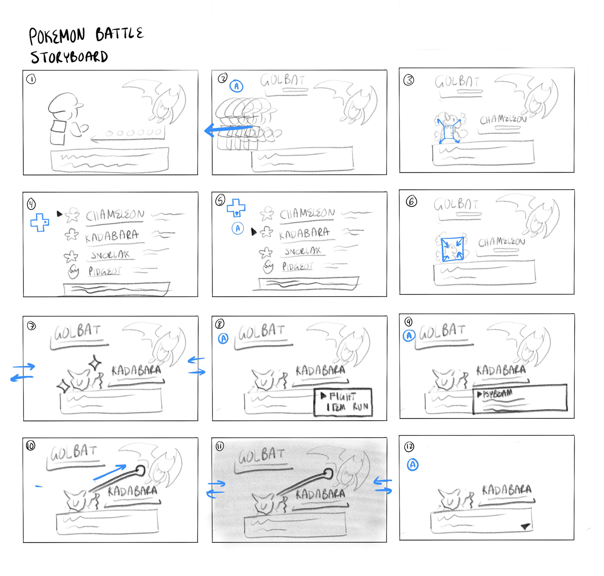
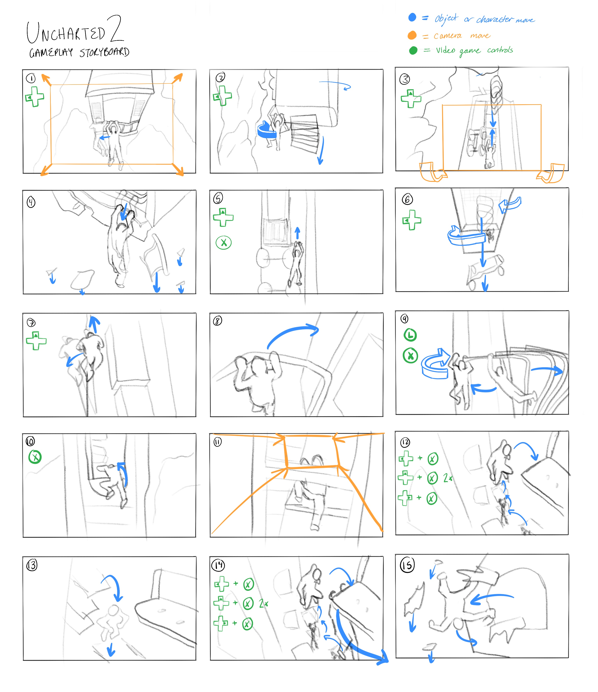

Lab 3
22/January/2026
What I Learned
Pre-production for Interactive Media
In this lab, I explored the similarities and differences between preproduction for linear and non-linear media. I specifcally looked at:
- Storyboards for Interactive Tools - I reverse engineered storyboards for interactive tools
- 5 Dimensions of IxD - In class, I learned the five dimensions of interaction design: words, visual representation, physical objects or space, time, and behavior
Previsualization for Linear vs. Non-linearMedia
In this lab, I reverse engineered storyboards for two interactive games. Through this process, I learned that storyboarding for interactive tools involves creating visual representations of user interactions and experiences, which helps in planning and designing the flow of an interactive application or game. I also learned that storyboarding can be very similar to linear media, with user interaction added. In both processes, a storyboard that shows the flow of the story or user experience is used. In addition, for both linear and non-linear media, a script is needed to organize the flow of information. The key differences are that for linear media, the focus is on the storytelling, whereas in interactive design, focus is on the user experience.
Project Screenshots


Partner Storyboard Swap
My partner: Ravneet Jaura
What did Rav do differently: Different than my storyboards, Rav put the video game controls for each frame below the frame. She also used descriptions underneath the storyboard frames to further describe what was happening. Unlike how I used numbering to communicate the order of the storyboards, Rav used arrows.
What did the differences enhance or make difficult: Placing the controls below the frame made it easier to see which controls were being used each time. This enchanced readaility for the interaction. In addition, the use of descriptions for key frames was helpful in describing what happened. Using arrows instead of numbers made it easier to follow the flow of the storyboards, but it also made it harder to see the order of the panels.
What would I change considering Rav's work: I would add more detailed descriptions for each frame and consider using a combination of numbering and arrows to maintain clarity in both flow and order. I would also move my controls to below the frames to make the individual frames less cluttered.